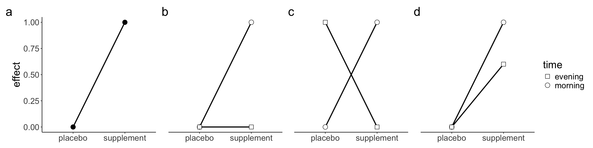

library(patchwork) # combine ggplots
library(metafor) # calculate effect sizes
library(ggplot2) # figures
library(dplyr) # data wrangling
library(kableExtra) # create tables
library(pwr) # conduct power analyses
library(MBESS) # calculate effect sizes
library(BUCSS) # adjust ES for uncertainty and bias4 Things to take into account when conducting an a priori power analysis
4.1 Adjusting for uncertainty and bias
As previously discussed, researchers often use an effect size from a previous study as an estimate of the true effect size when conducting an a priori power analysis. However, caution is warranted for two main reasons: (1) due to random variation, the observed effect size in a study may differ from the true population effect size, especially in studies with small samples, and (2) selection bias can inflate reported effect sizes. Therefore, when selecting an effect size from a previous study, researchers should consider using a more conservative estimate that accounts for uncertainty and bias.
4.1.1 Safeguard power analysis
One method is what Perugini et al. (2014) refer to as a safeguard power analysis which uses a more conservative effect size estimate to conduct the a priori power analysis. For example, researchers may select the lower bound of a two-sided 60% CI, which is equivalent to a one-sided 80% CI. Suppose that a researcher selects an effect size d = 0.5 reported in a previous study with an N of 100 (50 per group) and she suspects that the true effect size is smaller. The package MBESS can be used to estimate the lower bound of the 60% CI for the reported effect size.
cons_smd <- ci.smd(
smd = smd,
n.1 = N/2,
n.2 = N/2,
conf.level = .60
)The lower bound of the 60% CI corresponds to an effect size d of 0.33 which could then be used in an a priori power analysis.
4.1.2 Bias-adjusted effect size estimate
Another method to account for uncertainty and potential inflation of effect size estimates reported in the literature is to adjust the effect size using the package BUCSS (Anderson and Kelley 2016). This approach allows researchers to correct for uncertainty and bias when planning their sample size. For a detailed discussion on how to adjust inflated effect size estimates using the package BUCSS, readers are referred to Anderson & Maxwell (2017) and the package documentation. Below we demonstrate how to use the BUCSS package to account for publication bias and uncertainty in the context of an unpaired t-test and a two-way mixed ANOVA with one between-subject and one within-subject factor. For additional supported tests, consult package documentation.
Each function requires the reported test statistic and sample size from a previous study, along with several key arguments:
alpha.prior: the assumed statistical significance necessary for publishing in the field. To assume no publication bias and correct only for uncertainty, a value of 1 can be entered
alpha.planned: \(\alpha\) of the planned study
assurance: the long run proportion of times that the planned study power will reach or surpass desired level of power
power: desired level of power for the planned study.
Suppose a researcher plans to use an effect size reported in a previous study to conduct an a priori power analysis for their study. However, she suspects that the effect size is much smaller and that this research line suffers from publication bias and studies with under-powered designs, which result in inflated effect sizes in the published literature. To address this, she can use BUCSS to estimate the necessary sample size to achieve the desired level of power while correcting for bias and uncertainty.
Example 1: unpaired t-test
ss.power.it(
t.observed = 3,
N = 30,
alpha.prior = 0.05,
alpha.planned = 0.05,
assurance = 0.8,
power = 0.8,
step = 0.001
)[[1]] # only returns sample size (per group)[1] 131Example 2: a two-way mixed ANOVA with one between-subject and one within-subject factor
ss.power.spa(
F.observed = 8,
N = 40,
levels.between = 2,
levels.within = 2,
effect = "interaction",
alpha.prior = 0.05,
alpha.planned = 0.05,
assurance = 0.8,
power = 0.8,
step= 0.001
)[[1]] # only returns sample size (per between-subjects cell)[1] 467
Note
Often the corrected noncentrality parameter for a given level of assurance will be estimated to be zero. This is an indication that, at the desired level of assurance, the previous study’s effect cannot be accurately estimated due to high levels of uncertainty and bias. When this occurs, the function stops with an error because it is not possible to calculate a sample size under the current specifications. In such situations, researchers may need to lower the assurance level and/or reconsider the assumed publication bias (i.e., raise alpha.prior). If the previous study’s result is very weak, lowering the assurance level may not be enough and alpha.prior is the only remaining option.
4.2 Study context
When selecting an effect size from a previous study to inform an a priori power analysis, researchers should ensure that both studies are comparable in terms of context (Lakens 2022). This involves evaluating the key PICOS elements (Population, Intervention, Comparator, Outcome and Study design). For instance, populations with higher variability (i.e., larger SD) for a given outcome can yield smaller effect sizes, even when the mean difference is the same. Similarly, an intervention may produce different effect sizes across populations if it has a greater impact on the primary outcome in one population than in the other. Furthermore, the intervention itself must be comparable in terms of intensity and implementation. A stronger manipulation may produce larger effects. Similarly, the comparator—the group or condition against which the intervention is compared, which might be a placebo, a standard procedure or no intervention—can also influence the effect size estimate. If the primary outcome differs in operationalization or measurement, the effect sizes might not directly be comparable.
A final aspect to consider is the study design. To be able to select an effect size from a previous study, both study designs need to be similar. Researchers often conduct studies to test whether an effect is moderated by a second factor that suppresses, exacerbates or reverses the effect caused by a first factor (what is known as an interaction effect). In our experience, many researchers assume it is reasonable to select an effect size from a previous study that employed a simple design (i.e., a paired-sample design or an unpaired-sample design)—note this also applies to factorial design with one of the factors with two levels (df1 = 1)—to conduct an a priori power analysis for an interaction effect. However, whether the selected effect size is a good estimate of the interaction effect depends on the type of interaction or pattern of means that researchers expect to observe. Broadly speaking, there are three types of interactions: ordinal, disordinal or attenuated interaction (Figure 4.1). Readers are referred to Sommet et al. (2023) for a discussion about how different types of interactions affect power. To understand how the patterns of means affect the interaction effect size, it helps to conceive interactions as a “difference of differences” (Sommet et al. 2023; Langenberg et al. 2023). Under this approach, the calculation of a two-way interaction corresponds to the difference between a) the difference between the two levels of a factor at one level of the second factor and b) the difference between the two levels of a factor at the second level of the second factor. The advantage of this approach is that researchers can conduct an a priori power analysis for an interaction effect using a t-test and solely requires the specification of an expected effect size in terms of Cohen’s d. For a 2 x 2 between-subject design, the interaction effect can be calculated as follows (Sommet et al. 2023):
\[ d_{\text{int}} = \frac{(E_1 - C_1)}{\text{SD}_{\text{pooled}}} - \frac{(E_2 - C_2)}{\text{SD}_{\text{pooled}}}= \frac{(E_1 - C_1) - (E_2 - C_2)}{2 \times \text{SD}_{\text{pooled}}} \]
Where E and C refer to the experimental and control group respectively, and the subscripted numbers refer to the levels of the second factor. Thus, dint boils down to computing the difference between two standardised mean differences (ds) from the two main effects for which an a priori power analysis can be conducted in the framework of an unpaired t-test. To see how the pattern of means affects the interaction effect size, imagine we wish to test whether the effect of a supplement is moderated by the intake time (i.e., morning vs. afternoon) using a 2 x 2 between-subject design. Specifically, we expect that taking the supplement in the evening will knock out the effect of taking the supplement in the morning—what is known as an ordinal interaction (Figure 4.1 b). To conduct the a priori power analysis for this interaction effect, we rely on a previous study based on a between-subject design with two groups that found that the supplement of interest improved cycling time to exhaustion in comparison to a placebo. Assuming an equal SD of 2, the improvement in time to exhaustion would correspond to a Cohen’s ds = 0.5 ((1 – 0) / 2 = 0.5; Figure 4.1 a).
Now imagine that a researcher uses this Cohen’s ds as an estimate of the hypothesized ordinal interaction to conduct the a priori power analysis. Plugging an effect size of ds = 0.5, \(\alpha\) = 0.05, and a desired power of 0.8 into G*Power yields an N of 128 for a two-sided unpaired t-test, or 32 participants for each of the four groups in our 2 x 2 factorial design. However, this a priori power analysis would be invalid because the chosen effect size does not correspond to the hypothesized ordinal interaction. For the hypothesized ordinal interaction (Figure 4.1 b), the pattern of means would correspond to a dint = 0.25 (((1 – 0) – (0 – 0)) / (2 x 2) = 0.25). Plugging an effect size of dint = 0.25, \(\alpha\) = 0.05, and a desired level of statistical power to 0.8 into G*Power yields an N of 506 for a two-sided unpaired t-test, or about 127 participants per group. For a reverse interaction (Figure 4.1 c), the pattern of means would correspond to a dint = 0.5 (((1 – 0) – (0 – 1)) / (2 x 2) = 0.5). Thus, the selected effect size (ds = 0.5) used in our a priori power analysis would be clearly invalid and only appropriate in the case that we were expecting a reverse interaction. Lastly, for an attenuated interaction (Figure 4.1 d), the pattern of means would correspond to a dint = 0.1 (((1 – 0) – (0.6 – 0)) / (2 x 2) = 0.1). Plugging an effect size of dint = 0.1, \(\alpha\) = 0.05, and power to 0.8 into G*Power for a two-sided unpaired t-test yields an N of 3142, or 786 participants per group. Using the wrong estimate of the interaction effect has dire consequences for the sample size required to find the interaction.

The same approach applies to within-subject factorial designs. The key difference is that researchers need to know the correlation between measurements/conditions to estimate the covariance matrix required to compute the effect size. For a detailed tutorial, see Langenberg et al. (2023).